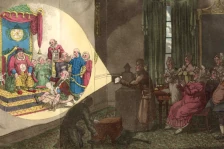
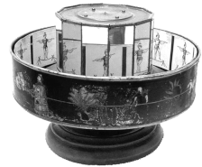
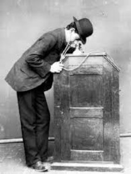
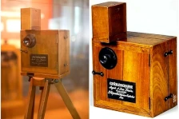

História do Cinema
Em 28.12.1895 os irmãos franceses Auguste Luière e Louis Lumuère realizaram a primeira exibição comercial de um filme na história de de cinema em Paris, no "Grand Café".
O ingresso custava um Franc "equivalente a 6 euros hoje". Muitos aparelhos foram criados para captar e projetar imagens em movimento. Vejamos alguns exemplos:
Lanterna Mágica
Inventada no século 17, era um equipamento para projeção de imagens através de lente e luz, desenhos em vidros. Em alguns momentos um narrador contava uma história, as vezes também usava efeitos sonoros.
Clique aqui e veja uma vídeo sobre a lanterna mágica.
Praxinoscópio
Foi um aparelho desenvolvido em 1877 por um francês chamado Charles Émile Reynaud. Este aparelho era um aparelho em formato circular o qual era envolto por um círculo maior. O circulo maior tinha vários desenhos, o menor tinha alguns espelhos, quando o círculo maior se movia as imagens eram refletidas no menor o que gerava uma imagem que parecia se mover aos olhos do telespectador.
clique aqui e veja uma vídeo sobre Praxinoscópio

Cinetoscópio
Foi um aparelho desenvolvido por uma empresa de Thomas Edison em 1894 e era um aparelho de projeção interna de filmes. este equipamento só podia ser usado por uma pessoa por vez, pois o aparelho podia captar imagens, mas não fazia a reprodução delas.
O usuário colocava o rosto sob o aparelho e assistia filmes de curta duração. Eram exibidas danças, fotos temáticas, desenhos infantis e até conteúdo adulto.
Clique aqui e veja uma vídeo sobre cinetoscópio
O fonógrafo foi um equipamento desenvolvido por Thomas Edison em 1878. Era um dispositivo capaz de gravar e reproduzir o som, Alexander Graham Bell melhorou o fonógrafo. A ideia de Thomas Edison era juntar as capacidades do Cinetoscópio e do cinematógrafo com a finalidade de criar um aparelho que pudesse transmitir áudio e vídeo.
Cinematógrafo
Em 1892 Léon Bouly desenvolveu o Cinematógrafo. Um aparelho capaz de gravar e transmitir imagens com movimento em tela. Este aparelho permitia a visualização coletiva.
Infelizmente Léon Bouly não tinha dinheiro para patentear sua criação. Os irmãos Auguste Lumière e Louis Lumière patentearam o cinematógrafo.
Os irmão Lumière aperfeiçoaram as primeiras câmeras fotográficas, o que contribuiu para a fotografia colorida.
Em 28 de dezembro de 1895, no "Grand Café" em Paris os irmãos Lumière realizaram a primeira exibição de cinema. Foram exibidos 10 curtas metragem.
Veja os primeiros filmes dos irmãos Lumière clicando aqui.
